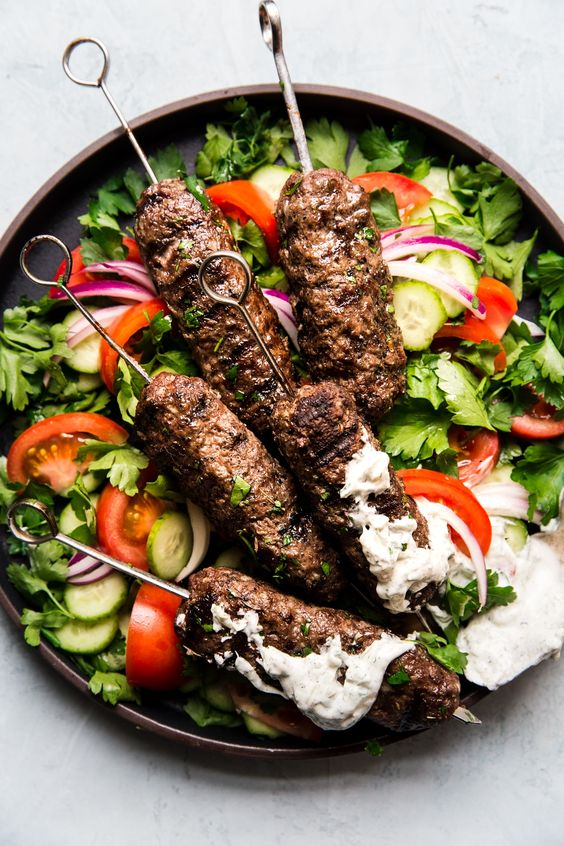

This dish is called Kofta.
This dish is ground meat (beef/lamb/or mixed) formed into columns or sometimes round like meatballs.
With kofta, you can eat it with salad, with rice and vegetables in sauce.
Or make it into a sandwhich with pita bread, salad, and tahini sauce.
 Hotel